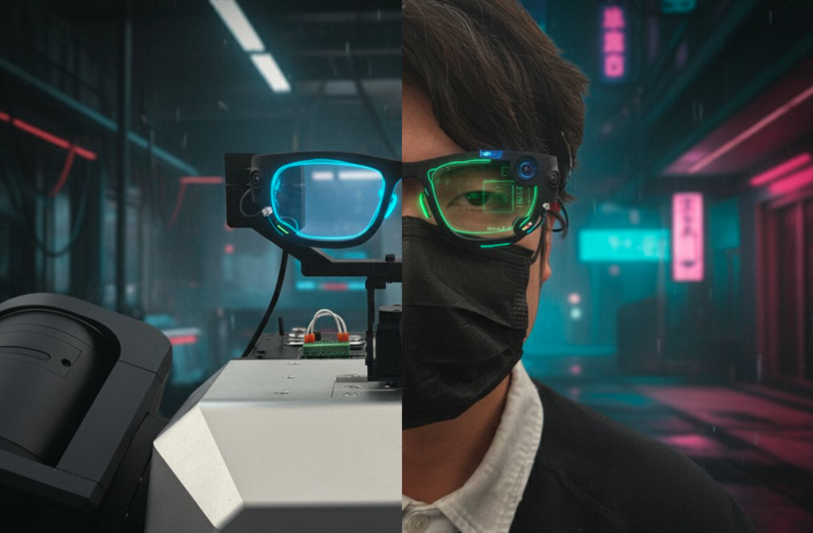

EgoEngine: From Egocentric Human Videos to High-Fidelity Dexterous Robot Demonstrations
Shuo Cheng1*, Yangcen Liu1*, Yiran Yang1,2†,
Xinchen Yin1†, Woo Chul Shin1†,
Mengying Lin1, Danfei Xu1
1Georgia Institute of Technology
2Tsinghua University
{shuocheng, yliu3735, yyang3180, xyin85, wshin49, mlin365, danfei}@gatech.edu

Real or Not: Click to Play Mini Game!
Real-World Tasks
Left: original (human foreground). Right: inpainted (robot foreground).